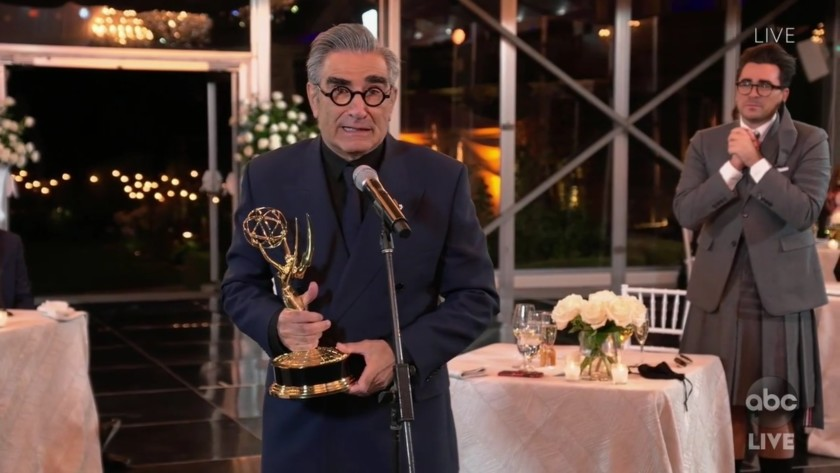

Our Presidential Candidates
Emperor Palpatine

Emperor Palpatine, the former supreme channcoler of the republic order. Now the emperor of the first galatic empire.Palpatine rose through power as the senator of Naboo, his mastery of manipulation to lead to his two identities. One of senator Palpatine while his other is Darth Sidious, one of the most powerful sith lords to ever exist. He masterminded the clone wars in order to gain political powers through the Galatic Republic during its last years of existence. Shortly after the fall of the Jedi Order, Palpatine established his complete reign of the galaxy from 19 BYY (before the battle of Yavin) until his death in 4 ABY (after the battle of Yavin). Though death was not enough to stop him from returning from death itself as his knowledge of the dark side lead to ways of conquering death itself.
Through the Emperor’s determination and his immense knowledge of the dark side force powers makes him a great candidate for president. As I’m sure he probably killed them in their sleep already.
Mike Tyson

Michael Gerard Tyson was born on June 30, 1966 in Brooklyn, New York to a young Jimmy Kirkpatrick and Lorna Tyson. His father Jimmy abandoned the family when Tyson was two years old and a young Mike grew up in the rough neighborhood of Brownsville, Brooklyn where he was often the target of bullying. His first fight was in retaliation to a neighborhood bully named Gary who had ripped the head off of one of Tyson’s pet pigeons. After that moment a trigger in the young Mike Tyson snapped and he pummeled Gary into submission with a flurry of punches. By age 13 he had been arrested 38 times but his boxing talents were soon noticed by a juvenile detention center counselor who introduced the young Tyson to Cus D’Amato, a renowned boxing trainer. Under D’Amato’s tutelage, Mike Tyson honed and became renowned for his lightning quick punching combinations, his devastating knockout power, his relatively shorter stature as a heavyweight fighter, and his slippery defense with his peekaboo style of constant head bobs and weaves. With a professional boxing record of 58 total fights with 50 wins (44 wins by knockout) and 6 losses, Mike Tyson aka Iron Mike aka Kid Dynamite was the dominant heavyweight champion of the professional boxing world from 1987 to 1990 and claimed the record of the youngest undisputed heavyweight champion.
In this world “might makes right”, we should go with a candidate that exudes power. With the bar set as low as President Trump, we should look to a respectable and frightening figure to bring us back into the fold of a sensible democracy. How amazing would it be to see Iron Mike intimidate those cowardly and ancient relics sitting in our congress. There would be no more unjustifiable recesses to postpone what needs to get done. Iron Mike would shut that up right away with his face tattoo and his scarred knuckles. Mitch McConnell and his turtle-like neck would quake in terror at the sight of President Tyson cracking his knuckles if a filibuster was threatened. But despite his fearsome reputation, presidential candidate Mike Tyson has a refined, humorous, and sensitive side. He is an aficionado of the sport of pigeon racing which shows trust and care in animals. He has his own one man show on Broadway titled “Mike Tyson: The Undisputed Truth” which was directed by Spike Lee. He has a sense of humor as evidenced by his cameo in the blockbuster movie “The Hangover''. He is also highly critical of the U.S. criminal justice system and has described prison as a place where "there's no such thing as rehabilitation. Prison is all dehabilitation.” Mike Tyson is in favor of the federal legalization of marijuana. A vote for Mike Tyson would be a vote for decency, respect, and hard work, and undeniable knockout power unseen in professional boxing. A vote for Iron Mike is a vote for the full 12 rounds--and those 12 rounds will go the distance.
Benjamin Asher ("Olympus Has Fallen; London Has Fallen")

If I had the option to vote for a president in the United States, I would vote for Benjamin Asher as a president. For this reason, he's also experienced his fair share of devastation while in office, losing his wife and being there when the White House comes under attack. Asher's ability to persevere might be his greatest strength on the job.
Eugene Levy
My endorsement for president of The United States of America would have to be Eugene Levy, a Canadian actor from Toronto. There is nothing but integrity and honesty from that man. In today’s current state of affairs, it would be a wise choice to elect someone from Canada and why not out of all people… Eugene? From his humble beginnings on Second City Television to a few notable roles such as Splash with Tom Hanks (Also electable but unfortunately, he’s not running) and the Schitt’s Creek, a 2020 Emmy winning comedy. As a screenwriter and an actor he can definitely make a good “Splash” on politics down here in the states. With a little Canadian charm that brings “Don’t ya knows” and “How about that eh’s?” into our culture, Johnny Rose… or I mean Eugene Levy would be a great pick! -He’s calm, collected, and gives good speeches. -Eugene can read and recite a script very well. -He has great family relations in real life; he acts with his own children in different shows. -He can play in movies with Tom Hanks! -Eugene has a nurturing empathic touch to his personality which is inherently great for an actor and President. -Let’s finally elect a Canadian! I know it’s a taboo subject but also everyone has been waiting for a long time to have a Canadian in the Oval Office for once.